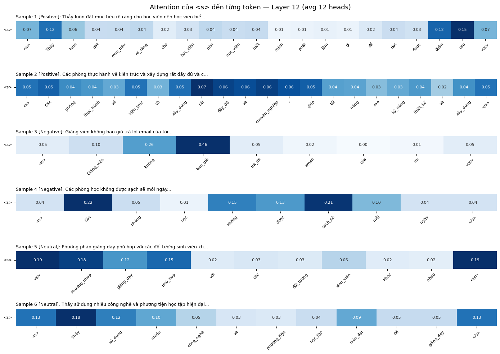
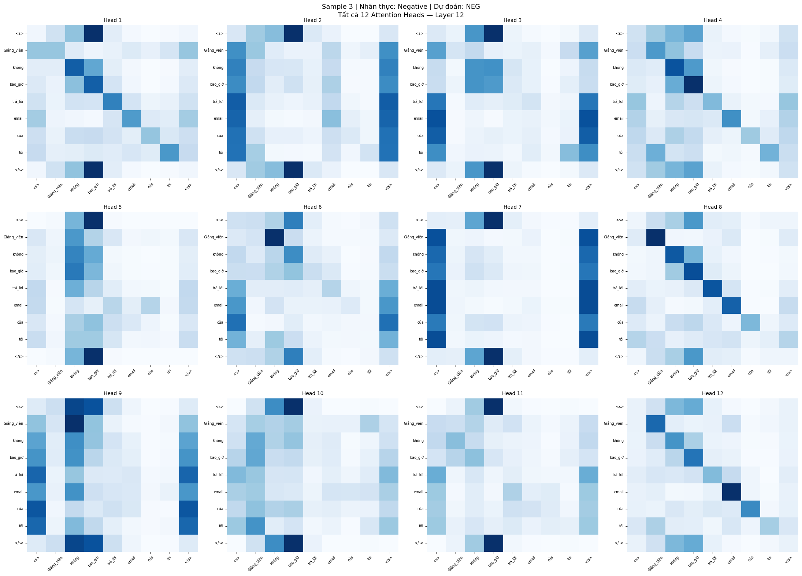

Evaluating and Explaining Vietnamese NLP Models (Explainable NLP)
Applying and comparing four explainability methods — LIME, SHAP, Attention Visualization, and Saliency Map — on a fine-tuned PhoBERT sentiment classifier, to assess how trustworthy the model's predictions really are on Vietnamese text.
Motivation
Transformer-based models such as BERT, GPT, and PhoBERT have pushed Vietnamese NLP to new levels of accuracy on tasks like text classification, sentiment analysis, and question answering. But this performance comes at a cost: these models operate as "black boxes" — they produce high-confidence predictions without offering a clear account of the reasoning behind them. That opacity is a serious problem in domains that demand transparency and accountability — healthcare, law, finance — and it is compounded for Vietnamese, a language with its own morphological and syntactic quirks that make model behavior harder to interpret than for more commonly studied languages.
This project applies explainability (XAI) methods to a Vietnamese text classification model: visualizing Attention weights to see which words the model "looks at", and using LIME and SHAP to quantify how much each word contributes to a prediction — in order to assess how trustworthy the model actually is, and to discuss where today's explanation methods still fall short.
Setup
| Component | Detail |
|---|---|
| Dataset | UIT-VSFC (Vietnamese Students' Feedback Corpus) — 16,000+ sentences labeled Positive / Negative / Neutral, from Vietnamese university students' feedback on teaching quality and facilities |
| Model | wonrax/phobert-base-vietnamese-sentiment — a PhoBERT model already fine-tuned on Vietnamese e-commerce review sentiment, evaluated here out-of-domain on student feedback text |
| Sample selection | 6 representative sentences from the UIT-VSFC test set (2 Positive, 2 Negative, 2 Neutral) — the goal was comparing XAI methods, not optimizing classifier accuracy |
| Preprocessing | Vietnamese word segmentation via underthesea.word_tokenize (multi-syllable words joined with underscores, e.g. "nhiệt_tình"), then tokenized with max_length=128 |
Four Explainability Methods Compared
| Method | Basis | Model-agnostic? | Shows direction (+/-)? | Cost |
|---|---|---|---|---|
| LIME | Local linear approximation | Yes | Yes | Medium (500 perturbed samples per sentence) |
| SHAP | Shapley values (game theory) | Yes | Yes | High (combinatorial subsets) |
| Attention Visualization | Transformer self-attention weights | No | No | Low (single forward pass) |
| Saliency Map | Gradient w.r.t. input embeddings | No | No | Low (one backward pass) |
LIME and SHAP have a real advantage: they show which direction a word pushes the prediction (supporting or opposing the predicted label), while Attention and Saliency Map only show relative importance, without saying whether a token pushed the prediction toward or away from the predicted class.
Key Findings
Strong agreement on negation
On the two Negative-labeled samples, all four methods converged on the same signal. For "Giảng viên không bao giờ trả lời email của tôi" ("The instructor never replies to my emails"), predicted Negative with 99.8% confidence, LIME assigned the word "không" ("not/never") a weight of +0.3399 — the strongest token in the sentence — and SHAP assigned "không" a value of 0.9823 in the other Negative sample, far ahead of every other token. This consistency across four independent methods is a strong positive signal: the model has genuinely learned the role of negation in Vietnamese, not just a spurious correlation.
A puzzling function word
Not every signal was easy to interpret. SHAP assigned the function word "của" ("of") a surprisingly high value of 0.4222 in one Negative sample — plausibly tied to the personalizing role of "của tôi" ("of mine") in a complaint, but still a hard-to-interpret signal on its own, and a reminder that explanation methods don't always point to features a human would consider obviously meaningful.
Divergence on Positive and Neutral samples
Agreement was noticeably weaker outside the Negative group. On Positive samples, the four methods highlighted different top tokens, and explicitly positive words like "rõ_ràng" ("clear") or "chuyên_nghiệp" ("professional") didn't always rank in the top 3 — suggesting the model leans more on broader contextual patterns (e.g. education-domain entities like "Thầy", "học_viên") than on individual sentiment words. On one Neutral sample, the model's confidence swung noticeably toward Positive in the presence of words like "hiện đại" ("modern") or "công_nghệ" ("technology") — Saliency Map and Attention even flipped to predicting Positive on that sentence, exposing a genuinely fuzzy Neutral/Positive boundary in the education domain, and a plausible side-effect of the model being originally fine-tuned on e-commerce reviews rather than student feedback.
Trustworthiness by Label Group
| Group | Trust level | Basis |
|---|---|---|
| Negative | High | All four methods agree on negation cues ("không", "bao_giờ") as the dominant signal |
| Positive | Medium | High-confidence correct predictions, but explanations point more to domain entities than to explicit positive sentiment words |
| Neutral | Low | Confidence and even predicted label became unstable in the presence of technology-related vocabulary |
Illustrative Results

token to each token, across all 6 samples"><s> token to each input token (layer 12, averaged
over 12 heads) across all 6 samples — negation words ("không", "bao_giờ") clearly dominate
the two Negative samples.
Limitations
- All four methods measure correlation, not causation — a high SHAP value or saliency score doesn't prove a token actually caused the prediction, only that it's statistically associated with it.
- These are local explanations on individual sentences; drawing conclusions about overall model trustworthiness from just 6 samples is illustrative, not statistically conclusive.
- Methods can disagree on the same sentence with no clear framework for deciding whether that disagreement signals an untrustworthy model or just different (equally valid) perspectives.
- SHAP's masking-based approximation and Saliency Map's gradient-saturation issue (near-certain predictions produce tiny gradients) can each distort which tokens appear important.
- Vietnamese-specific challenges: word segmentation can split meaningful compounds (e.g. "kiến trúc" → "kiến" + "trúc"), multi-word negation ("không bao giờ") gets its weight split across tokens instead of treated as one unit, and there is no Vietnamese equivalent of an English-style rationale benchmark (like ERASER) to evaluate explanation quality quantitatively.